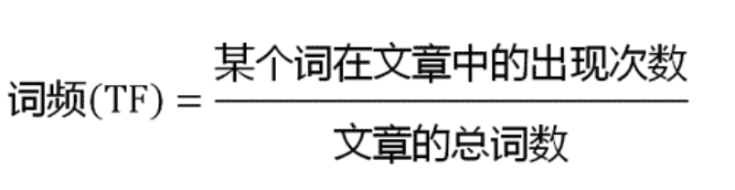
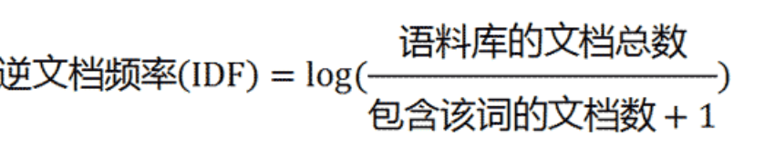
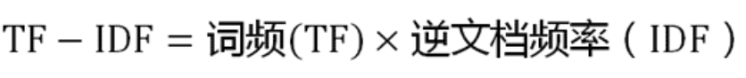

随机森林模型¶
学习目标：
- 掌握利用随机森林快速实现并评估基线模型.
1.随机森林模型¶
编写代码实现随机森林的模型训练. 代码位置:
02-random_forest/random_forest.py
导入工具包
from sklearn.feature_extraction.text import TfidfVectorizer
from sklearn.model_selection import train_test_split
from sklearn.ensemble import RandomForestClassifier
import pandas as pd
from icecream import ic
from sklearn.metrics import accuracy_score
from sklearn.metrics import recall_score
from sklearn.metrics import precision_score
from sklearn.metrics import f1_score
1.1 读取数据集¶
# 指定数据集的位置
TRAIN_CORPUS = './data/data/train_new.csv'
STOP_WORDS = './data/data/stopwords.txt'
WORDS_COLUMN = 'words'
# 读取数据集
content = pd.read_csv(TRAIN_CORPUS)
# 构建语料库
corpus = content[WORDS_COLUMN].values
1.2 将文本转换为数值特征¶
TF-IDF（term frequency–inverse document frequency，词频-逆向文件频率）是一种用于信息检索（information retrieval）与文本挖掘（text mining）的常用加权技术。它由两部分组成，TF 和 IDF。
第一步，计算词频。
考虑到文章有长短之分，为了便于不同文章的比较，进行 “词频” 标准化（归一化）。

第二步，计算逆文档频率。这时，需要一个语料库（corpus），用来模拟语言的使用环境。

如果一个词越常见，那么分母就越大，逆文档频率就越小越接近0。分母之所以要加1，是为了避免分母为0（即所有文档都不包含该词）。log表示对得到的值取对数。
第三步，计算TF-IDF。

TF-IDF 是一种统计方法，用以评估一字词对于一个文件集或一个语料库中的其中一份文件的重要程度。字词的重要性随着它在文件中出现的次数的增加成正比增加，但同时会随着它在语料库中出现的频率成反比下降。
TF-IDF 的主要思想是：如果某个单词在一篇文章中出现的频率 TF 高，并且在其他文章中很少出现，则认为此词或者短语具有很好的类别区分能力，适合用来分类。
具体实现如下所示：
# 读取停用词
stop_words = open(STOP_WORDS).read().split()
# 计算tfidf特征
tfidf = TfidfVectorizer(stop_words=stop_words)
text_vectors = tfidf.fit_transform(corpus)
1.3 划分数据集，模型训练和模型预测¶
# 目标值
targets = content['label']
# 划分数据集
x_train, x_test, y_train, y_test = train_test_split(text_vectors, targets, test_size=0.2, random_state=0)
# 实例化模型
model = RandomForestClassifier()
# 模型训练
model.fit(x_train, y_train)
# 模型评估
accuracy = accuracy_score(model.predict(x_test), y_test)
ic(accuracy)
- 输出结果:
ic| accuracy: 0.8148333333333333
2.结论¶
随机森林构建模型简单, 训练快, 最终81.48%的准确率(可以视作80%)对于10分类任务来说也是不错的模型. 重要的是我们快速拥有了一个准确率达到80%的基线模型1.0